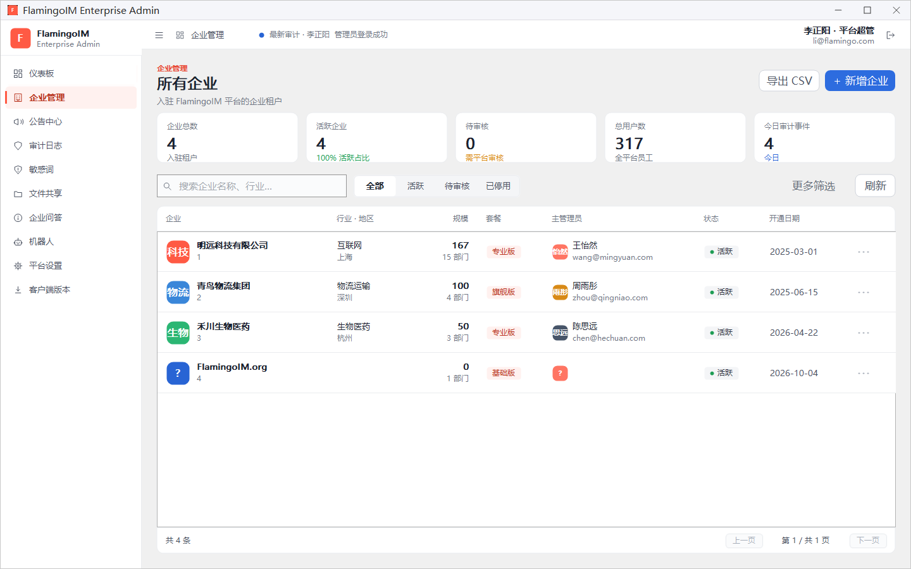
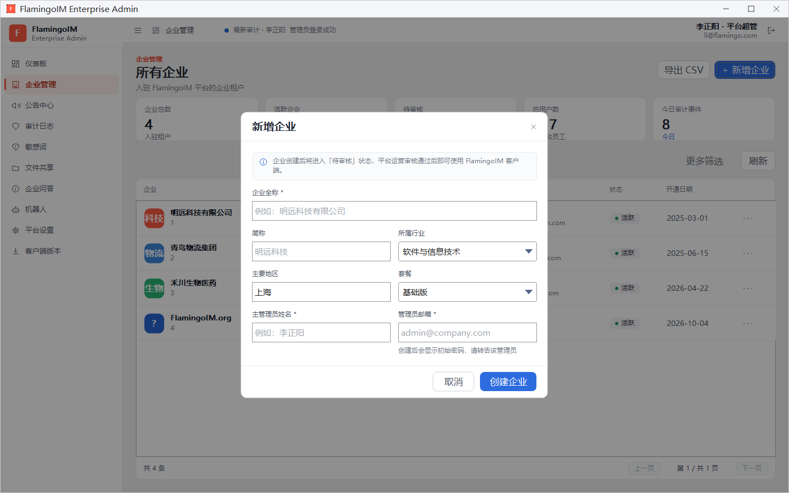
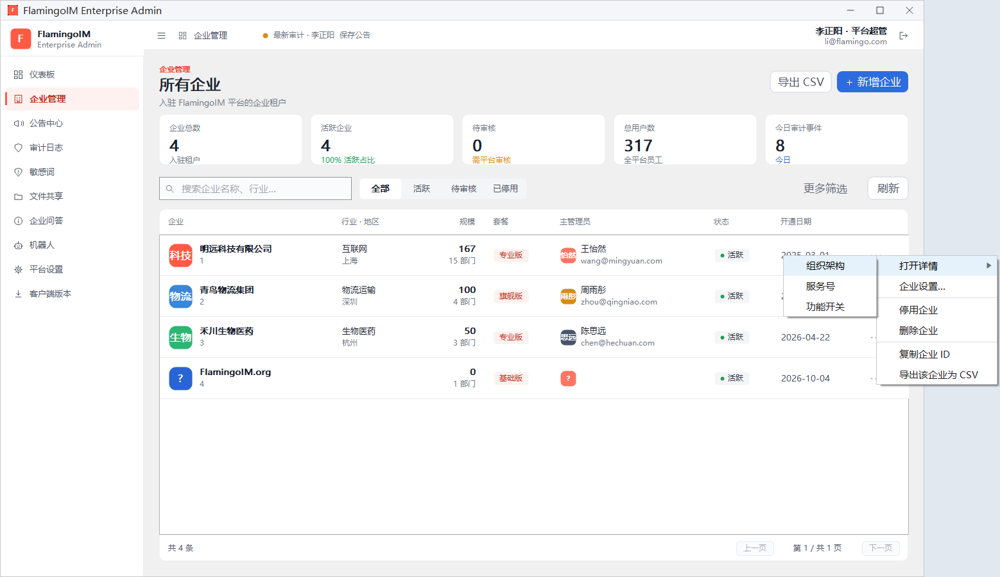
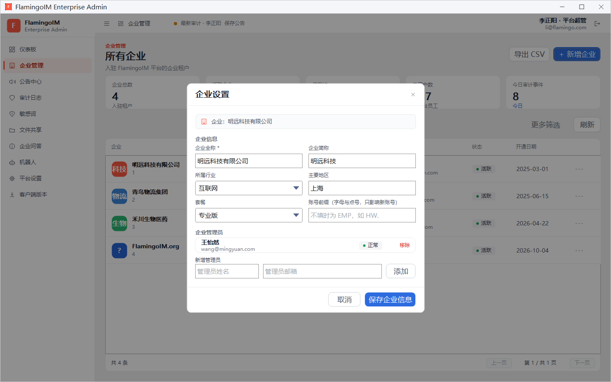
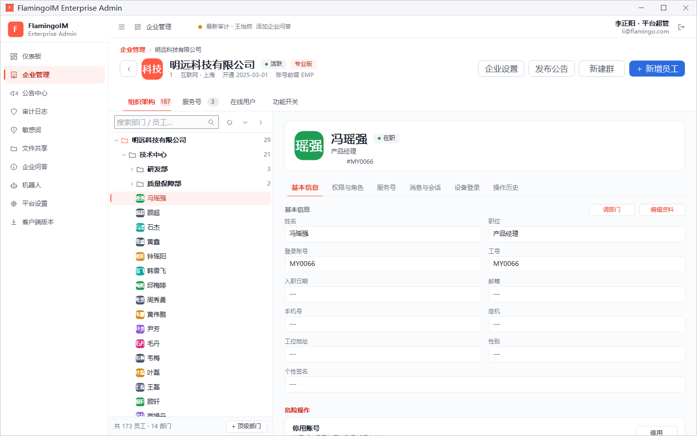

企业管理
平台上的每家企业都由平台超级管理员开通。本章介绍如何查找企业、新增企业并审核通过、停用或删除企业、修改企业信息和企业管理员，以及进入某家企业的详情替它管理组织架构。
- 适用：平台超级管理员
- 位置：左侧导航「企业管理」
所有企业
点左侧导航的 企业管理，页面列出入驻平台的全部企业：

- 右上角：导出 CSV 把企业列表保存为 CSV 文件；新增企业 见下一节。
- 统计卡：企业总数、活跃企业（附活跃占比）、待审核、总用户数（全平台员工）和 今日审计事件。
- 查找：在 搜索企业名称、行业… 框中输入关键字；用 全部、活跃、待审核、已停用 按状态筛选。点 更多筛选 还可以按行业、套餐和开通日期范围（格式 YYYY-MM-DD）筛选，清除 恢复全部条件；刷新 重新读取列表。
- 列表：企业（名称与企业 ID）、行业 · 地区、规模（人数与部门数）、套餐、主管理员（姓名与邮箱）、状态 和 开通日期。双击某一行进入该企业的详情。
新增企业
点右上角的 新增企业，打开新增企业对话框：

- 填写 企业全称（必填），例如「明远科技有限公司」。员工在客户端自助注册时填写的公司名称必须与它完全一致。
- 按需填写 简称，选择 所属行业，填写 主要地区，选择 套餐（基础版、专业版或旗舰版）。
- 填写 主管理员姓名 和 管理员邮箱（均为必填）。这个邮箱就是该企业管理员登录管理控制台的账户。
- 点 创建企业。
创建成功后弹出「企业创建成功」对话框，显示初始管理员密码，点 复制密码 可以复制。请把管理员邮箱和这个密码转告该企业的管理员。
初始密码只显示一次关闭对话框后就无法再看到这个密码，请先妥善保存再关闭。
新企业要先审核通过企业创建后进入「待审核」状态，审核通过后该企业的员工才能使用 FlamingoIM 客户端。审核方法见下一节。
审核、停用与删除企业
每一行末尾的「···」按钮会弹出该企业的操作菜单：

| 菜单项 | 作用 |
|---|---|
| 打开详情 ▸ | 子菜单中选择 组织架构、服务号 或 功能开关，直接打开企业详情的对应页签 |
| 企业设置… | 修改企业信息、管理企业管理员，见下一节 |
| 审核通过 | 只在企业处于「待审核」时出现，把企业改为「活跃」，员工随即可以使用客户端 |
| 停用企业 | 只在企业处于「活跃」时出现。停用后该企业全体员工会被立即下线，在恢复为活跃之前都无法登录 |
| 启用企业 | 只在企业处于「已停用」时出现，把企业恢复为「活跃」 |
| 删除企业 | 删除该企业，它的组织、成员等数据会被一并物理删除，不可恢复 |
| 复制企业 ID | 把企业 ID 复制到剪贴板 |
| 导出该企业为 CSV | 只导出这一家企业的信息 |
删除企业不可恢复停用和删除都会先弹出确认框。只是暂时不让企业使用时请选择「停用企业」，以后可以随时启用；「删除企业」会清除该企业的全部组织与成员数据。
企业设置与企业管理员
在操作菜单中选择 企业设置…（或在企业详情页点 企业设置），打开企业设置对话框：

修改企业信息
- 在 企业信息 中按需修改 企业全称（必填）、企业简称、所属行业、主要地区 和 套餐。
- 按需填写 账号前缀：由字母和点号组成，1~10 个字符，例如
HW.；不填时为EMP。账号前缀用于生成该企业新员工的登录账号，只影响以后新建的账号，已有账号不变。 - 点 保存企业信息。
修改企业全称时员工在客户端自助注册时，填写的公司名称必须与企业全称完全一致。修改企业全称后，请把新名称告诉需要自助注册的员工。
管理企业管理员
对话框下半部分的 企业管理员 列出该企业的全部管理员，每人显示姓名、邮箱和状态（正常或停用）。一家企业可以有多位管理员。
- 新增管理员：在 新增管理员 一行填写管理员姓名和管理员邮箱，点 添加，立即生效（不需要再点「保存企业信息」）。成功后弹出「管理员新增成功」对话框，显示初始登录密码，同样只显示一次。
- 移除管理员：点某位管理员右侧的 移除 并确认，该账号立即失去本企业控制台的管理权限。
企业详情
双击企业列表中的某一行，或在操作菜单中选择「打开详情」，进入该企业的详情页面：

企业详情与企业管理员看到的「本企业」页面相同，组织架构、服务号、在线用户和功能开关的用法见第二部分：「组织架构与员工」、「服务号」、「建群与在线用户」、「功能开关」。超管额外多出：
- 企业头像左侧的返回箭头，点它回到企业列表。
- 企业设置：打开上一节的企业设置对话框。
- 发布公告：打开新建公告对话框，受众已预先设为「指定企业」并选中这家企业，用法见「平台公告」。